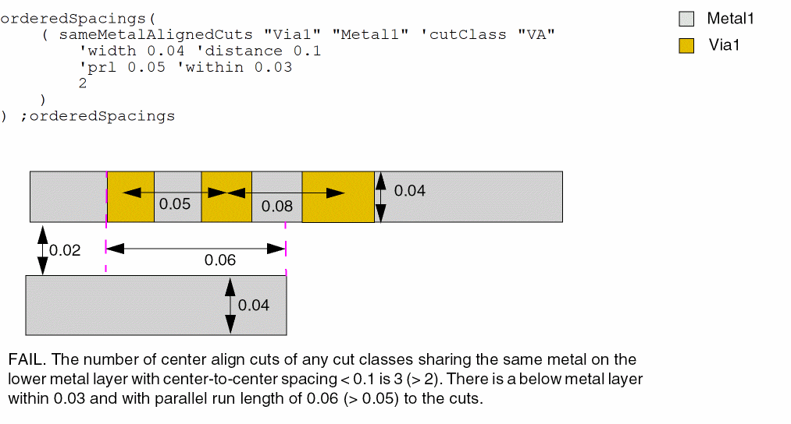
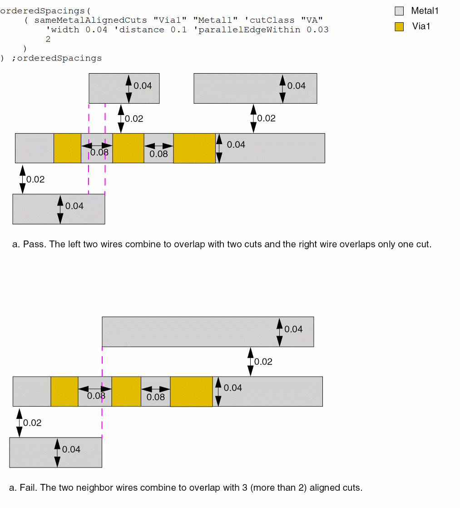
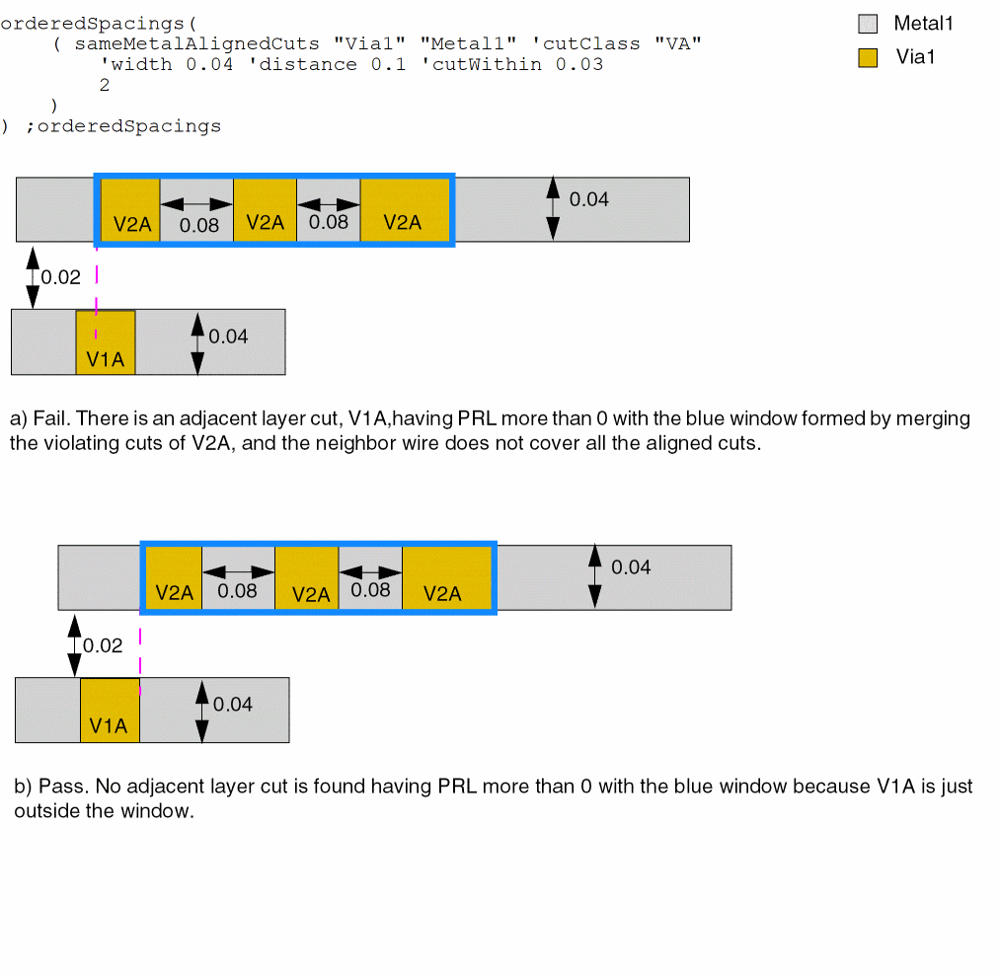
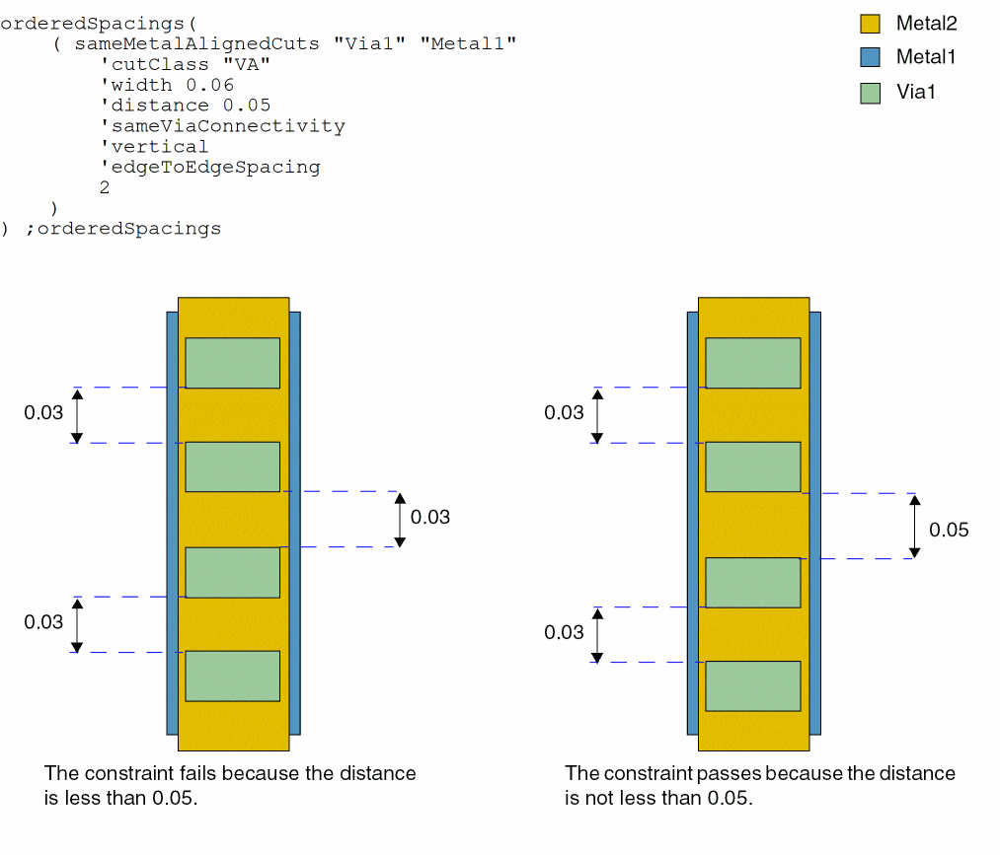

sameMetalAlignedCuts
orderedSpacings( ( sameMetalAlignedCutstx_cuttx_metal['cutClass {g_width| (g_widthg_length) |t_name}] 'widthg_width'distanceg_cutDistance['prlg_parallelRunLength'withing_within| 'parallelEdgeWithing_metalWithin['withCut] | 'cutWithing_cutWithin] ['cutClassSetListg_cutClassSetList] ['noViaMetalOverlapg_noViaMetalOverlap'otherLayerg_otherLayer] ['sameViaConnectivity] ['horizontal | 'vertical] ['centerToCenterSpacing | 'edgeToEdgeSpacing] ['otherMask1 | 'otherMask2 | 'otherMask3 | 'otherMask4]g_numCuts)
); orderedSpacings
(Virtuoso Advanced Node for Layout Only) Specifies the maximum number of centered cuts if the cuts share the same shape above or below the metal layer.
Values
Parameters
|
The cut class to which the constraint applies, specified by width, by width and length, or by name (as defined in a cutClasses constraint). |
|
|
The constraint applies only if the width of the metal containing the cuts is less than or equal to this value. |
|
|
The constraint applies only if the spacing between the cuts is less than this value. The g_cutDistance value is measured center-to-center or edge-to-edge depending on other parameters selected. |
|
|
The constraint applies only if the layer with same-metal cuts has a neighboring wire within f_within and a parallel run length greater than f_parallelRunLength to the cuts. The width of the neighboring wire must be less than or equal to g_width. |
|
|
The constraint applies only if the distance of the neighboring wire is within f_within. |
|
|
The constraint applies only if there are neighbor wires on one or both sides on the metal layer, which all the cuts share, within the given value and touching or overlapping with more than g_numCuts. Neighbor wires on opposite sides would be merged only if they overlap. In addition, the width of this neighbor wire must also be less than or equal to g_width. The g_cutDistance value is measured edge-to-edge.
The |
|
|
The constraint applies only if a neighbor wire contains a cut on the adjacent cut layer of the current layer with parallel run length more than 0 and with a window formed by merging the violating cuts. The neighbor wire does not need to cover all the aligned cuts. The g_cutDistance value is measured edge-to-edge. |
|
|
(Virtuoso Layout Suite EXL and higher tiers) The constraint applies if all cuts belong to cut classes in the list and if there is at least one cut from each cut class set. For example, if the value is |
|
|
|
|
|
(Virtuoso Layout Suite EXL and higher tiers) The constraint applies only if there is a shape on g_otherLayer overlapping with the metal covering the aligned cuts by extending the given g_noViaMetalOverlap value on one of the end cuts of the aligned cuts and there is no via cut on the overlap metal. |
|
|
The constraint applies only if the via cuts are overlapped by a single metal shape from above and by another single metal shape from below. |
|
|
The constraint applies only to the cut spacing in the specified direction. |
|
|
The cut spacing is measured as center-to-center, which is the default, or edge-to-edge. |
|
|
(Virtuoso Layout Suite EXL and higher tiers) The constraint applies to the metal mask containing the aligned cuts, |
|
Examples
- Example 1: sameMetalAlignedCuts with width and distance
- Example 2: sameMetalAlignedCuts with prl and within
- Example 3: sameMetalAlignedCuts with parallelEdgeWithin
- Example 4: sameMetalAlignedCuts with cutWithin
- Example 5: sameMetalAlignedCuts with noViaMetalOverlap
- Example 6: sameMetalAlignedCuts with sameViaConnectivity
Example 1: sameMetalAlignedCuts with width and distance
The maximum number of centered cuts is 2 when the cuts share the same metal above or below the metal layer and when the following conditions are met.
Example 2: sameMetalAlignedCuts with prl and within
The maximum number of centered cuts with center-to-center spacing less than 0.1 is 2 when these conditions are met:
- The cuts share the same metal above or below the metal layer
- There is a shape on layer tx_metal within 0.03μm with parallel run length more than 0.05μm
-
Both tx_metal shapes have width less than or equal to 0.04

Example 3: sameMetalAlignedCuts with parallelEdgeWithin
The maximum number of centered cuts with edge-to-edge spacing less than 0.1 is 2 when these conditions are met:
- The cuts share the same metal above or below the metal layer
- Neighbor wires on one or both sides on the metal layer that all the cuts share are within 0.03μm.
-
Both tx_metal shapes have width less than or equal to 0.04

Example 4: sameMetalAlignedCuts with cutWithin
The maximum number of centered cuts with edge-to-edge spacing less than 0.1 is 2 when these conditions are met:
- The cuts share the same metal above or below the metal layer
- A neighbor wire within 0.03μm contains a cut on the adjacent cut layer of the current layer
-
Both tx_metal shapes have width less than or equal to 0.04

Example 5: sameMetalAlignedCuts with noViaMetalOverlap
The maximum number of centered cuts is 2 when the cuts share the same metal above or below the metal layer and when a shape on Metal2 overlaps with the metal covering the aligned cuts by extending by 0.06.
Example 6: sameMetalAlignedCuts with sameViaConnectivity
The maximum number of centered cuts is 2 when these conditions are met:
- The cuts share the same metal above and below the metal layer
- Both tx_metal shapes have width less than or equal to 0.06.
- The via cuts are overlapped by a single metal shape from above and by another single metal shape from below.
-
The edge-to-edge spacing in vertical direction is less than 0.05.

Return to top